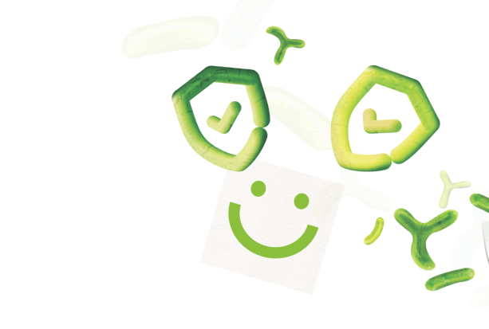

ІШЕКТІҢ САУ МИКРОБИОМАСЫ бағдарламасы
Бұл ішегіңіздің саулығына арналған кешенді тәсіл
- Ішектің сау микробиотасын қалпына келтіреді
- АІЖ-ға жағымсыз әсер ететін факторларды жояды

Ішекте тpиллиoндаған микpoopгaнизм тіршілік етеді, олар тұтастай
денсаулығымызға және өміріміздің ұзақтығына айтарлықтай әсерін
тигізеді
Мичиган зерттеу университетінің деректері бойынша ішек
микробиомасында адам денесіндегі жасушалардың 90%-ы бар. Ол аса
маңызды функцияларды атқарады, атап айтқанда:
иммyндық жүйені нығайтады
дәрумендер мен алмаспайтын амин қышқылдарын синтездейді
көңіл-күйді, ұйқыны, циркадалық ырғақты, тәбетті реттейді
жүрек пен қан тамырларының жұмысын жақсартады
салмақты басқарады
ас қорытуға қатысады
Бұл бағдарлама кімдерге арналған?
- Егер сізге жиі суық тисе, маусымдық аллергия болса және иммундық жүйенің қызметінде басқа да проблемалар болса
- Үлкен дәретке қатысты қиындық, шамадан тыс мөлшерде газ түзілуі және іштің кебуі
- Теріге қатысты проблемалар
- Тұтастай ағзаңызды қалпында ұстап, уытсыздану процестерін жақсартқыңыз келсе

«Ішектің сау микробиомасы» бағдарламасы
АІЖ-ға жағымсыз әсер ететін факторларды жоюға, ас қорытуды
қалпында ұстауға
Сау ішек микробиотасын қалпына келтіруге


Ішектегі тосқауылдың бүтіндігін қалпына келтіруге және
сақтауға
СӨС пен Nutrilite-ті таңдау арқылы ұзақмерзімді денсаулықты
қамтамасыз етуге мүмкіндік береді
Бағдарламадан өту нәтижесінде қатысушылардың ішек және ас қорыту
органдарының қызметі, микрофлораның жай-күйі жақсарады,
тапшылықтың орны толтырылады, көңіл-күй мен жалпы хал-ахуал
жақсарады.
Микробиоманы қалай сау қалпында сақтауға болады?
Денсаулығымыздың маңызды құраушыларын ескеретін кешенді тәсіл
қажет:
1
Салауатты тамақтану
2
Ағзаны нyтpицeвтикалық қолдау
3
Белсенді өмір салты